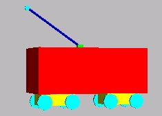
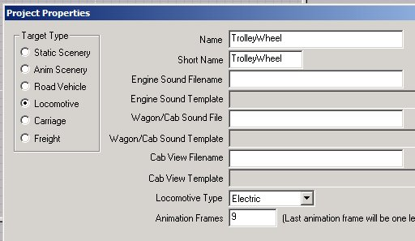
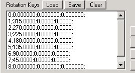

How To Animate An Electric Loco (And Make Parts Move Using The P Key): Section 8
by Paul DeVerter
A Port City Car Co. Project Copyright © 2005
SECTION 8 - The Trolley Wheel
Actually this Section had nothing to do directly with the P key, or animation using that key, except to point out several things that will not work. Instead, this Section deals primarily with the counter rotating trolley wheel.
Located at the top of the trolley pole is either a shoe or a wheel. Locomotives that drew a good deal of current, typically used a shoe while lighter cars, such as interurban and streetcars typically used a wheel. The wheel is about 6" in Diameter, and perhaps 1½ or 2" thick. Usually they were spoked. Tim Muir has placed a few trolleys in the Train-Sim Library that have rotating trolley wheels. Unfortunately, these wheels rotate in the wrong direction.
Assume you have a trolley car moving from left to right. Then the wheels on the track rotate clockwise. In order to make the trolley wheel rotate, it is designated with a reserved Train Name, such as Wheel23. This will automatically cause it to rotate, just as do Wheels22 or 21, but in the same direction of rotation as the wheels on the track. That is because the Part Parent is Bogie2 (or perhaps Bogie1, if a single car truck). But, the trolley wheel does not ride on top of the rail; instead it rides under the trolley wire. So, as the car moves from left to right, the trolley wheel should be rotating counterclockwise, not clockwise. Well, you can barely see it, so maybe it does not matter. But Tim issued a challenge, so I decided to see if I could make the wheel rotate the proper direction. It can be done, with a little animation.
Once again, make a fanciful trolley car, and on top place a trolley base (to represent the springs that hold up the pole, a trolley pole, and at the top a trolley wheel to contact the wire. If you like, you could use the same locomotive you used for the Crane, in Section 7 or you could cobble together a new one, without the Crane feature, so that it will not interfere with the basic features we are going to cover.
I made a new one, and here is what it looks like. It is our familiar box Main,

and has the usual 2 Bogies, two sets of wheels, and the trolley base, pole, and wheel. Since the instructions for making this have been pretty well covered in Section 7, I am not going to spend time in showing you how to make it.
There are some things that must be remembered. The Part Parent is the Main. The 2 Bogies are each dependent from the Main. The wheel sets Wheels11 and Wheels 12 are dependent from Bogie 1, etc. Lets set the Animation Frames to 9, and make the Trolley Wheel a little large so you can see it better.

Once you have everything textured, you must decide what name to use, and also what to use as a Part Parent for the Trolley Wheel. As noted in the introduction, if you make the Name one of the Reserved Train Names, then the animation may be handled automatically. Wheels11, etc are done in that manner. However, they will turn the wrong direction for a trolley wheel. Suppose we chose another Train Name, this time Wheel1. This Train Name is not automatically given rotation by TSM. Instead, you must add a rot file, or else manually do the part animation bit. The drivers on a steam locomotive are named in this same series, but the animation is not automatic. On the other hand, because it is a reserved Train Name, it will rotate as the locomotive moves down the track, and will stop when the loco stops.
This is what I tried, and it worked. Name the Trolley Wheel with the reserved Train Name Wheel1, and make the Part Parent Main. Now you must set up the animation so that the Wheel1 will turn counterclockwise as the Locomotive moves from left to right. To do this, you may use the "Ani" button and go through the procedure you have already learned. Alternatively, I gave you some exemplary rot files as attachments to Section 1, How To Animate A Scenery Object. Being lazy, I used one of those. I chose the one with 8 Frames of animation, rotating about the x axis, and counterclockwise.
Simply go to the Part Animation box, and for the Rotation Keys portion click the Load button, and browse to where you have previously saved the rot file, and select it. Your Part Animation window will then look like this.

Now it is time to Create the Train Simulator Object and see what you have. You should have an electric locomotive named TrolleyWheel, which moves right along on the track, and you should notice that the Trolley Wheel is likewise rotating, but counterclockwise, which is just fine for a wheel pressing up on the trolley wire.
Lessons Learned
You now know how to animate your Trolley Wheel, in the sense that you can make it rotate, in the proper direction relative to the trolley wire. And you have used a reserved Train Name, so that the rotation is not continuous, but is instead a function of movement of the locomotive.